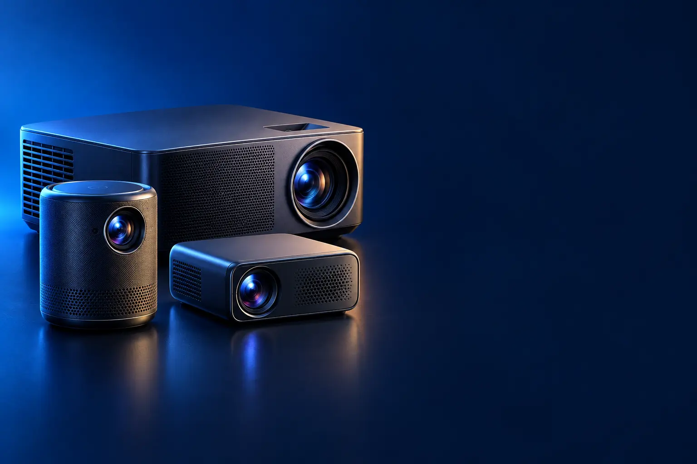

MINI PROJETOR (ENTRADA)
Melhor mini projetor portátil custo-benefício
Cinema no quarto à noite, com apps embutidos, gastando pouco.

Melhor custo-benefício em projetorMagcubic HY300
CURADORIA TECHAPROVADO · 2026
Projetor faz uma tela de 100 polegadas caber na parede. Separamos 8 modelos em 2 perfis e dizemos para quem cada um vale a pena.

NOSSA LEITURA
Mini projetores anunciam 8.000 ou 18.000 lúmens, mas o que vale é o lúmen ANSI ou ISO: de 200 a 500 nos portáteis, 3.000 nos de sala. E "4K" quase sempre é só o vídeo aceito, não a imagem.
COMECE POR AQUI
MINI PROJETOR (ENTRADA)
Cinema no quarto à noite, com apps embutidos, gastando pouco.
CINEMA EM CASA
Mais brilho, Google TV oficial e imagem de TV grande.

A FICHA, TRADUZIDA
01 - BRILHO
Lúmen mede o brilho. Muitos mini projetores anunciam números enormes (8.000, 18.000) que não seguem padrão. O número confiável é o ANSI ou ISO.
200 a 500 ANSI: só no escuro. 600 a 1.500: penumbra. 3.000 ou mais: sala com alguma luz.
Quanto maior a imagem, menos brilhante ela fica. Para usar de dia, prefira TV.
02 - RESOLUÇÃO
Resolução nativa é a que o projetor realmente mostra. "Suporta 4K" quer dizer que ele aceita o vídeo 4K e o converte para a resolução nativa, que pode ser 720p.
720p nativo é aceitável em telas até 80 polegadas. Para 100 polegadas ou mais, prefira 1080p nativo; 4K nativo só nos modelos de topo.
Procure "1080p nativo" ou "Full HD nativo" na ficha, não só no título.
03 - SISTEMA E APPS
Muitos mini projetores com Android genérico não rodam a Netflix direito. Os com Google TV ou Netflix licenciado abrem os apps sem gambiarra.
Se o seu tiver problema com apps, um stick como o Fire TV ou o Roku resolve, ligado no HDMI.
Atualizações também importam: sistemas oficiais recebem correções; os genéricos, raramente.
04 - INSTALAÇÃO
A distância da parede define o tamanho da imagem. Em geral, 2,5 a 3 metros dão cerca de 100 polegadas; veja a tabela do manual.
Foco automático e correção trapezoidal automática endireitam a imagem quando o projetor não está alinhado. Mas a correção digital reduz um pouco a nitidez.
Uma parede branca lisa funciona; uma tela de projeção melhora contraste e cor.
05 - SOM
Quase todos têm alto-falante, mas fraco para cinema. Ligue uma caixa Bluetooth ou soundbar para filmes.
Projetores com som Dolby ou caixas destacáveis, como o Nebula P1, dispensam caixa extra.
Bluetooth pode atrasar o som em relação à imagem; alguns projetores têm ajuste de sincronia.
A CURADORIA EM DETALHE
8 modelos da pesquisa
PERFIL · 4 MODELOS, DA ENTRADA AO TOP DE LINHA
Os mini projetores com Android são a porta de entrada: pequenos, com Netflix, YouTube e outros apps embutidos e imagem de até 100 polegadas na parede. Funcionam bem no escuro; com luz acesa, a imagem fica lavada.
MINI PROJETOR · CUSTO-BENEFÍCIO 1 de 4
Melhor custo-benefício em projetor
Android 11 · Wi-Fi 6 · gira 180° · 720p nativo
Ver preço na AmazonPOR DENTRO DA ESCOLHA
Mini projetor com Android 11, Wi-Fi 6 de banda dupla, Bluetooth 5.0, alto-falante de 5 W, correção trapezoidal automática e base que gira 180° para projetar na parede ou no teto.
O mini projetor mais avaliado da loja (8,6 mil avaliações). Funciona bem no escuro e em telas de até 80 polegadas.
| Resolução nativa | 720p |
|---|---|
| Sistema | Android 11 |
| Extras | Gira 180°, Wi-Fi 6 |
Fonte: ficha e descrição do anúncio, conferidas em 02/11/2026. Dados informados pelo fabricante. Nota e número de avaliações são de compradores, não teste do TechAprovado.

MINI PROJETOR · INTERMEDIÁRIO 2 de 4
1080p nativo · foco automático · 260 ANSI · Air Mouse
Ver preço na AmazonPOR DENTRO DA ESCOLHA
Projetor com resolução nativa 1080p, foco automático e correção trapezoidal vertical automática, 260 lúmens ANSI, contraste de 10.000:1 e controle Air Mouse, que funciona como mouse apontando para a tela.
O degrau sobre o HY300 é a resolução nativa Full HD e o foco automático.
| Resolução nativa | 1080p |
|---|---|
| Brilho | 260 ANSI |
| Foco | Automático |
Fonte: ficha e descrição do anúncio, conferidas em 02/11/2026. Dados informados pelo fabricante. Nota e número de avaliações são de compradores, não teste do TechAprovado.

MINI PROJETOR · AVANÇADO 3 de 4
400 ANSI · motor óptico fechado · foco automático
Ver preço na AmazonPOR DENTRO DA ESCOLHA
Projetor com 400 lúmens ANSI, motor óptico totalmente fechado (evita poeira na imagem), foco automático, correção trapezoidal 6D, alto-falantes estéreo e Android com Wi-Fi 6.
O motor óptico fechado evita as manchas de poeira comuns em mini projetores com o tempo.
| Brilho | 400 ANSI |
|---|---|
| Motor óptico | Fechado |
| Foco | Automático |
Fonte: ficha e descrição do anúncio, conferidas em 02/11/2026. Dados informados pelo fabricante. Nota e número de avaliações são de compradores, não teste do TechAprovado.

MINI PROJETOR · TOP DE LINHA 4 de 4
Top de linha mini projetor
1080p nativo · Netflix oficial · 500 ANSI · HDMI 2.1
Ver preço na AmazonPOR DENTRO DA ESCOLHA
Projetor com Netflix licenciado oficialmente (abre direto, sem gambiarra), resolução nativa 1080p, 500 lúmens ANSI, foco eletrônico, correção trapezoidal de ±30°, Wi-Fi 6, Bluetooth 5 e HDMI 2.1.
A Netflix oficial é o diferencial: nos mini projetores comuns, o app costuma não funcionar direito.
| Resolução nativa | 1080p |
|---|---|
| Brilho | 500 ANSI |
| Netflix | Licenciado |
Fonte: ficha e descrição do anúncio, conferidas em 02/11/2026. Dados informados pelo fabricante. Nota e número de avaliações são de compradores, não teste do TechAprovado.
PERFIL · 4 MODELOS, DA ENTRADA AO TOP DE LINHA
Os projetores de marca entregam brilho medido de verdade (lúmens ANSI ou ISO), sistema oficial com Netflix e garantia no Brasil. São para quem quer trocar a TV por uma imagem de 100 polegadas ou mais.
CINEMA EM CASA · CUSTO-BENEFÍCIO 1 de 4
Melhor custo-benefício para cinema em casa
Google TV · Full HD · 400 lúmens ISO · desvio de obstáculos
Ver preço na AmazonPOR DENTRO DA ESCOLHA
Projetor Full HD com Google TV oficial, 400 lúmens ISO, imagem de 40 a 120 polegadas (60 a 100 recomendadas), foco automático, correção trapezoidal automática e detecção de obstáculos.
Google TV oficial e ajustes automáticos: liga e funciona, sem configurar nada.
| Resolução | Full HD |
|---|---|
| Brilho | 400 lúmens ISO |
| Sistema | Google TV |
Fonte: ficha e descrição do anúncio, conferidas em 02/11/2026. Dados informados pelo fabricante. Nota e número de avaliações são de compradores, não teste do TechAprovado.

CINEMA EM CASA · INTERMEDIÁRIO 2 de 4
Full HD · 3.000 lúmens · 3LCD · smart
Ver preço na AmazonPOR DENTRO DA ESCOLHA
Projetor smart Full HD da Epson com 3.000 lúmens, brilho suficiente para usar com alguma luz no ambiente.
O brilho de 3.000 lúmens é várias vezes o dos portáteis: a imagem aguenta luz ambiente.
| Resolução | Full HD |
|---|---|
| Brilho | 3.000 lúmens |
| Tecnologia | 3LCD |
Fonte: ficha e descrição do anúncio, conferidas em 02/11/2026. Dados informados pelo fabricante. Nota e número de avaliações são de compradores, não teste do TechAprovado.

CINEMA EM CASA · AVANÇADO 3 de 4
650 ANSI · caixas destacáveis 20 W Dolby · Google TV
Ver preço na AmazonPOR DENTRO DA ESCOLHA
Projetor portátil com caixas de som destacáveis (som estéreo real com Dolby Audio, 20 W), 650 lúmens ANSI, braço que gira para projetar na parede ou no teto, ajustes automáticos e Google TV com Netflix.
As caixas destacáveis resolvem o ponto fraco dos portáteis: o som.
| Brilho | 650 ANSI |
|---|---|
| Som | 20 W Dolby, caixas destacáveis |
| Sistema | Google TV |
Fonte: ficha e descrição do anúncio, conferidas em 02/11/2026. Dados informados pelo fabricante. Nota e número de avaliações são de compradores, não teste do TechAprovado.

CINEMA EM CASA · TOP DE LINHA 4 de 4
Top de linha da lista
4K UHD · laser RGB · 1.300 ANSI · até 200"
Ver preço na AmazonPOR DENTRO DA ESCOLHA
Projetor compacto 4K UHD com laser RGB, 1.300 lúmens ANSI, imagem de 65 a 200 polegadas e alto-falante de 2 canais.
Laser RGB dá cores mais vivas e dura muito mais que lâmpada ou LED comum.
| Resolução | 4K UHD |
|---|---|
| Luz | Laser RGB |
| Brilho | 1.300 ANSI |
| Imagem | 65" a 200" |
Fonte: ficha e descrição do anúncio, conferidas em 02/11/2026. Dados informados pelo fabricante. Nota e número de avaliações são de compradores, não teste do TechAprovado.
Nenhum modelo encontrado. Tente outro termo ou volte para Todos.
LADO A LADO
| Modelo | Perfil | Posição | Brilho | Destaque | Nota (avaliações) |
|---|---|---|---|---|---|
| Magcubic HY300 | Mini projetor | Custo-benefício | Android 11 · Wi-Fi 6 · gira 180° · 720p nativo | 4,4 (8,6 mil) | |
| Magcubic Projetor 1080p com foco automático | Mini projetor | Intermediário | 260 ANSI | 1080p nativo · foco automático · 260 ANSI · Air Mouse | 4,4 (574) |
| BYINTEK U4 | Mini projetor | Avançado | 400 ANSI | 400 ANSI · motor óptico fechado · foco automático | 4,5 (217) |
| Bettdow AC1082 (Netflix licenciado) | Mini projetor | Top de linha | 500 ANSI | 1080p nativo · Netflix oficial · 500 ANSI · HDMI 2.1 | 4,5 (254) |
| Xiaomi Projetor L1 Pro | Cinema em casa | Custo-benefício | 400 lúmens ISO | Google TV · Full HD · 400 lúmens ISO · desvio de obstáculos | 4,5 (211) |
| Epson EpiqVision FH02 | Cinema em casa | Intermediário | 3.000 lúmens | Full HD · 3.000 lúmens · 3LCD · smart | 4,6 (504) |
| soundcore Nebula P1 | Cinema em casa | Avançado | 650 ANSI | 650 ANSI · caixas destacáveis 20 W Dolby · Google TV | 4,4 (215) |
| Hisense M2 Pro (4K a laser) | Cinema em casa | Top de linha | 1.300 ANSI | 4K UHD · laser RGB · 1.300 ANSI · até 200" | 4,5 (149) |
CONSIDERAÇÕES FINAIS
Muitos mini projetores anunciam brilho e resolução acima do real; usamos sempre os números ANSI e nativos da ficha. Modelos com anúncio inconsistente ficaram de fora.
O Magcubic HY300 para começar, e o Xiaomi L1 Pro para quem quer sistema oficial e Full HD.
Quase nunca. "Suporta 4K" quer dizer que aceita o vídeo; a imagem é 720p ou 1080p.
No escuro, sim, e com imagem muito maior. De dia, a TV é melhor.
Para o escuro, 300 a 500 ANSI. Para a sala com luz, 3.000 ou mais.
Porque ele muda várias vezes por dia. O botão leva ao valor atualizado na loja.
TRANSPARÊNCIA EDITORIAL
Separamos os projetores entre mini projetores de entrada e projetores de marca para cinema em casa, e usamos os números de brilho ANSI e de resolução nativa. Cada modelo precisa responder com clareza "para quem ele é o certo".
Em cada perfil há modelos em faixas de preço diferentes, e cada degrau precisa entregar algo que o anterior não entrega. Dois modelos com a mesma proposta não entram juntos.
Ficha, nota e número de avaliações foram conferidos nos anúncios das lojas em 02/11/2026. As avaliações são de compradores, não teste nosso.
Os links de compra desta página são de afiliado: se você comprar por eles, o TechAprovado pode ganhar uma comissão, sem custo adicional para você. Isso não muda a ordem nem a escolha dos produtos.
📲 GUIAS E DICAS NO SEU FEED
Dicas práticas antes de comprar, em carrosséis e vídeos curtos, sempre com link para o guia completo.